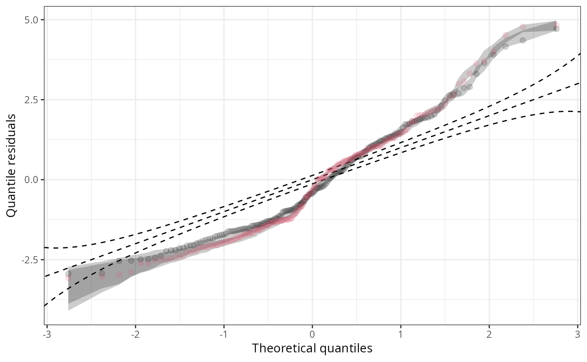

Q-Q Plots for Quantile Residuals
qqrplot.RdVisualize goodness of fit of regression models by Q-Q plots using quantile
residuals. If plot = TRUE, the resulting object of
class "qqrplot" is plotted by plot.qqrplot or
autoplot.qqrplot conditional if the package
ggplot2 is loaded, before it is returned.
qqrplot(object, ...) # S3 method for default qqrplot( object, newdata = NULL, plot = TRUE, class = NULL, trafo = qnorm, nsim = 1L, delta = NULL, confint = TRUE, confint_level = 0.95, confint_nsim = 250, confint_seed = 1, single_graph = FALSE, xlab = "Theoretical quantiles", ylab = "Quantile residuals", main = NULL, ... )
Arguments
| object | an object from which probability integral transforms can be
extracted using the generic function |
|---|---|
| newdata | optionally, a data frame in which to look for variables with which to predict. If omitted, the original observations are used. |
| plot | Should the |
| class | Should the invisible return value be either a |
| trafo | function for tranforming residuals from probability scale to a different distribution scale (default: Gaussian). |
| nsim, delta | arguments passed to |
| confint | logical or quantile specification. Should the range of
quantiles of the randomized quantile residuals be visualized? If
|
| confint_level | numeric. The confidence level required. |
| confint_nsim | numeric. The number of simulated quantiles. |
| confint_seed | numeric. The seed to be set for calculating the confidence interval. |
| single_graph | logical. Should all computed extended reliability diagrams be plotted in a single graph? |
| xlab, ylab, main, ... | graphical parameters handed passed to
|
Value
An object of class "qqrplot" inheriting from
"data.frame" or "tibble" conditional on the argument class
with the following variables:
theoretical quantiles,
empirical quantile residuals.
Details
Q-Q residuals plots draw quantile residuals (by default: transformed to standard
normal scale) against theoretical quantiles from the same distribution.
Alternatively, transformations to other distributions can also be used,
specifically using no transformation at all, i.e., remaining on the uniform
scale (via trafo = NULL or equivalently qunif or
identity). For computation, qqrplot leverages the function
qresiduals employing the procast.
Additional options are offered for models with discrete responses where randomization of quantiles is needed.
In addition to the plot and autoplot method for
qqrplot objects, it is also possible to combine two (or more) Q-Q residuals plots by
c/rbind, which creates a set of Q-Q residuals plots that can then be
plotted in one go.
References
Dunn KP, Smyth GK (1996). “Randomized Quantile Residuals.” Journal of Computational and Graphical Statistics, 5, 1--10.
See also
Examples
data("CrabSatellites", package = "countreg") CrabSatellites2 <- CrabSatellites[CrabSatellites$satellites <= 1, ] m1 <- glm(satellites ~ width + color, data = CrabSatellites, family = poisson) m2 <- glm(satellites ~ width + color, data = CrabSatellites2, family = binomial) m3 <- lm(dist ~ speed, data = cars) q1 <- qqrplot(m1, nsim = 100, confint = TRUE)q2 <- qqrplot(m2, nsim = 100, confint = TRUE, plot = FALSE) q3 <- qqrplot(m3, nsim = 100, confint = TRUE, plot = FALSE) plot(c(q1, q2), single_graph = FALSE, fill = c(1, 3), ref = c(2, 2))